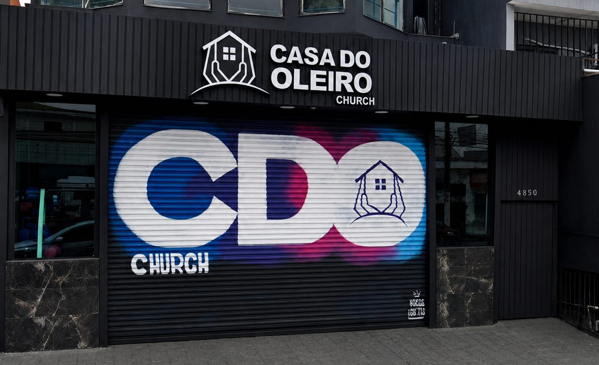

Casa do Oleiro Church

Comunidade
Encontre seu lugar na Casa do Oleiro
Conheça os ministérios, participe dos cultos e caminhe em comunhão com a igreja.

PROFETI ZANDO 2026
EXPANSÃO ROMPER AVANÇO
Mensagens e momentos
Uma igreja para acompanhar de perto
Veja celebrações, transmissões e registros especiais da Casa do Oleiro Church.
Online
Transmissões
Participe da live oficial da Casa do Oleiro Church.


Galeria
Fotos de cultos, convidados e eventos especiais.
Ver postagens no InstagramVídeos
Acompanhe mensagens e transmissões no canal oficial.
Abrir canal no YouTubeDízimos e ofertas
Contribuição
Use o QR Code Pix ou copie a chave abaixo para contribuir com a Casa do Oleiro Church.
- Favorecido
- Casa do Oleiro
- CNPJ / Pix
- 20.825.094/0001-45
- Instituição
- Cora SCFI
- Conta
- Ag. 001 · Conta 1175123-9
Chave Pix: 20.825.094/0001-45
Venha nos visitar
Contato
Av. Nordestina, 4850